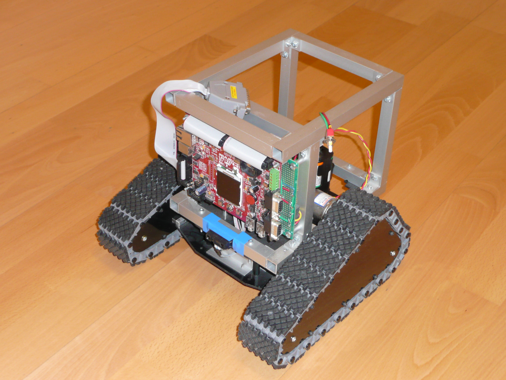
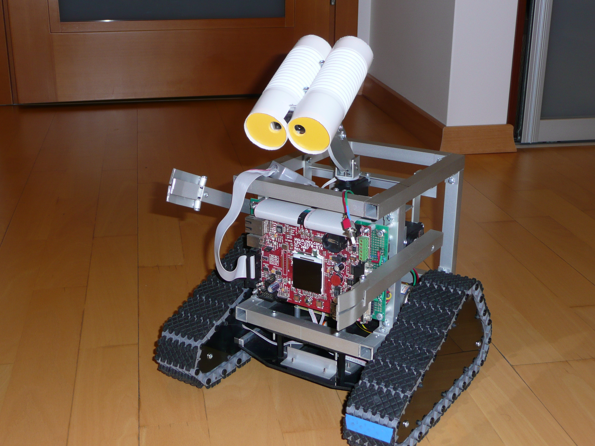

WALL·E Inspired Robot Project
(Page 2)
Here there is a few more WALL·E photos and list of his features presented.
"More..." below either leads to additional description or to the additional links which may help to find additional information.
Photos

Wall-e in 2012 (head not yet developed)

Wall-e in 2013 (no VRM, no US module)

Wall-e in 2018 (current state)
General Features
Hardware
- OLIMEX LPC2378-STK development board used as Wall-e controller. More...
- OLIMEX ARM J-TAG (parallel port driven) for flashing and debugging. More...
- Lynxmotion tri-track chassis kit. More...
- L298 integrated circuit based motor driver (self developed). More...
- Main interface board (self developed) to connect various sensors and actuators. More...
- Supportive interface board (self developed) with angular rate sensor (ARS), front light source detector and back daylight sensor. More...
- Tracks optical encoders (self made). More...
- HITEC HS-325HB servos for the arms (left and right) and for the head. More...
- Sharp GP2D12 distance detector. More...
- HC-SR04 Ultrasonic Sensor (US) (distance detector). More...
- EasyVR 3 a multi-purpose speech recognition module (VRM) plus speaker and microphone. More...
- KPX 612 05B Dynamic buzzer. More...
- Three battery packs for servo, tracks and electronics powering. More...
- Dimension: 30[cm]x30[cm]x37[cm] (11.81[in]x11.81[in]x14.57[in]). More...
- Weight (with batteries): ~2.5[kg] (~5,51[lbs]).
Software
- Assembler, C and C++ written software. 179kB executable (optimization turned off). More...
- Layered software architecture. More...
- uC/OS-II Real Time Operating System (RTOS) to assure real-time multitasking. More...
- C++, object oriented RTOS wrapper (self developed). More...
- C++ template based publish/subscribe middleware (self developed). More...
- Instead of C and C++ standard libraries self developed functions used. More...
- Self developed memory management for full control of C malloc/free and C++ new/delete functions. More...
- 13 so named managers (subscribers/publishers) and all together 17 RTOS tasks. More...
- 2D occupancy grid (3x3 cells) with distance sensors fusion for obstacle detection. More...
- (Naive) path planning based on 2D occupancy grid. More...
- Wall-e tilt detection. More...
- Simple Wall-e Graphic Library for LCD display management (self developed). More...
- Wall-e Simple Sequencer (interpreter) for basic action and move sequencies programing. More...
- Basic voice command control. More...
- RS-232 (serial) interface for diagnostic and debugging (with build-in debugger). More...
- 3 main functions (voice, on-board keyboard or remote control selected):
- Bath - gets my wife from the bath
- Test - a few move sequencies to check hw/sw
- Enjoy - some simple Wall-e movement
More...
Software Development Environment
All development environment (except Windows OS was free).
- Windows XP host development environment. More...
- Cygwin 1.7.13 tool set. More...
- GNU ARM tool chain with gcc 4.1.1. More...
- OpenOCD to debug with GDB and Insight Debugger. More...
- Eclipse 3.3.2 (Europa) with CDT (Note: Eclipse requires Java Runtime). More...
- H-JTAG software version 0.6.1 for LPC2378 flashing. More...
- Easy VR Commander for Voice Recognition Module programming. More...